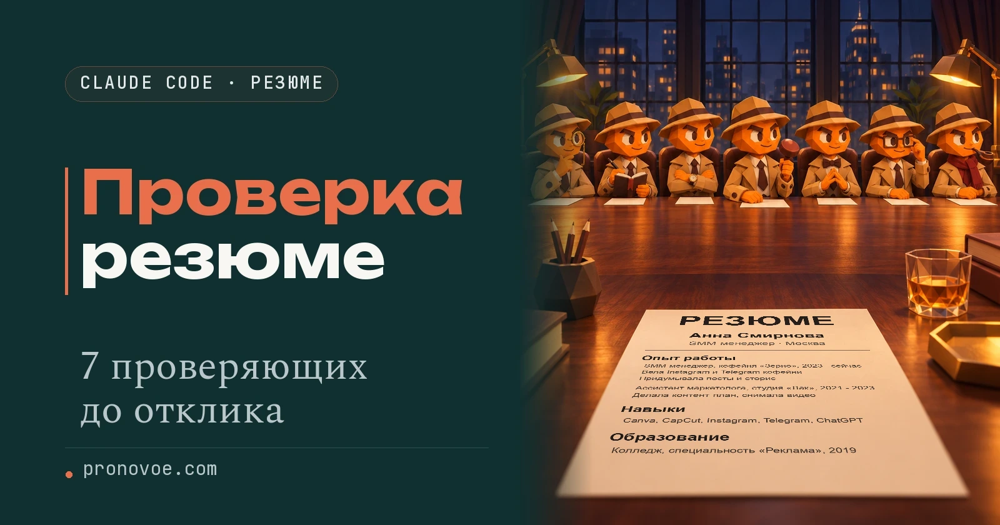
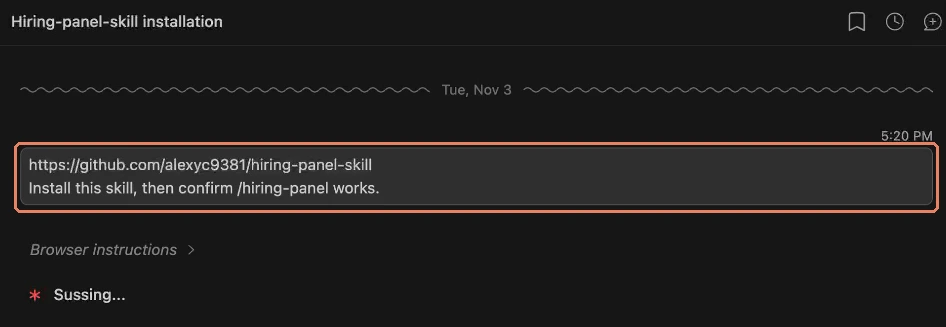
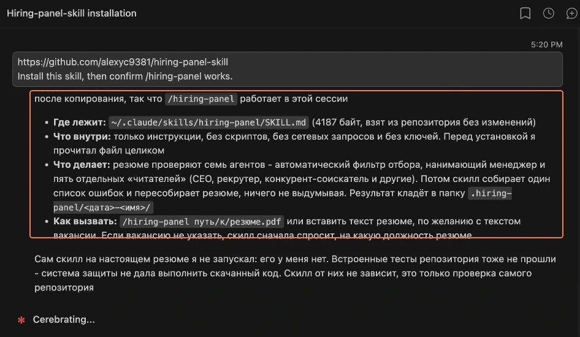
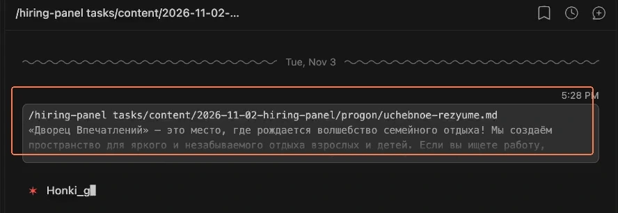
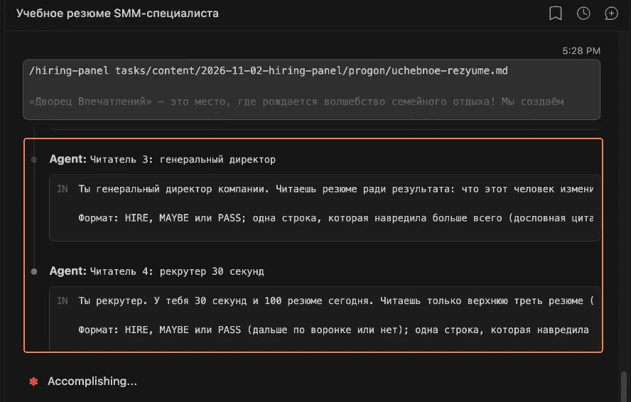
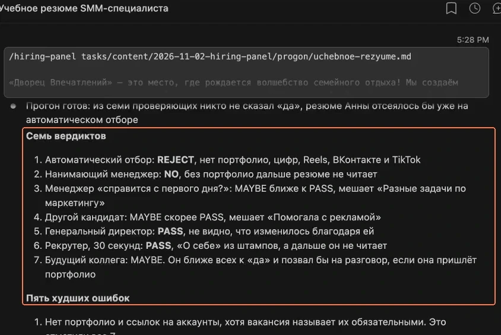
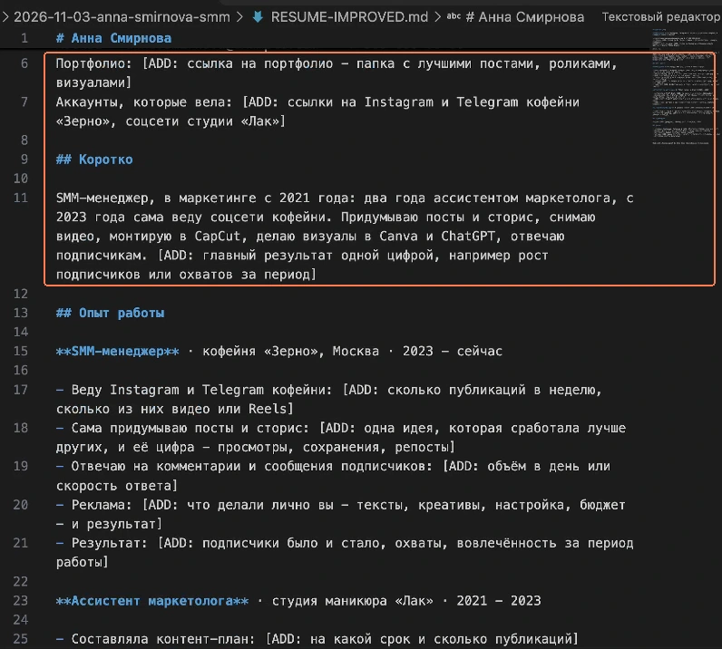
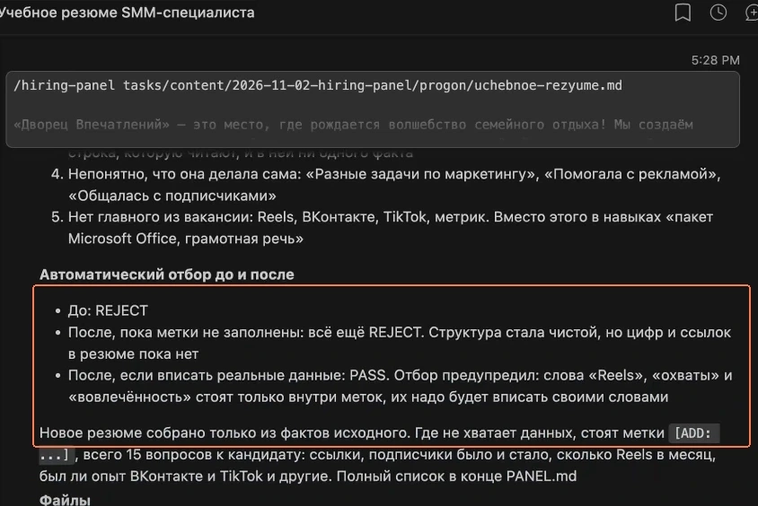

Claude Code · Резюме и поиск работы

Проверка резюме в Claude Code: семь мнений до отклика
Начальный уровень
Отправляешь резюме на десятки вакансий, а в ответ отказ или тишина, и никто не объясняет почему. Перед следующим откликом проверь резюме навыком /hiring-panel для Claude Code: семь проверяющих скажут, за что отклонили бы тебя, а потом ты получишь исправленное резюме и вопросы о цифрах, которых в нём не хватает
Содержание статьи
Что проверяют семь Claude
Навык называется /hiring-panel, по-английски "комиссия по найму". Навык - это готовая инструкция для Claude Code. Claude Code - программа, в которой Claude работает с файлами на твоём компьютере
Сначала работают двое: робот-фильтр, потом нанимающий руководитель. Остальные пятеро читают резюме независимо и не видят замечаний друг друга
- Робот-фильтр помогает отбирать отклики до чтения человеком. Claude проверяет, можно ли прочитать документ сверху вниз, понятны ли должности и даты, какие слова из вакансии отсутствуют. Это имитация проверки, доступ к системе работодателя навык не получает
- Нанимающий руководитель решает, приглашать ли тебя
- Будущий начальник - тот, у кого ты будешь работать каждый день
- Другой кандидат - Claude в роли конкурента на то же место: сравнивает своё резюме с твоим и ищет, где твоё слабее
- Директор смотрит, что изменилось благодаря твоей работе и насколько
- Рекрутёр читает только верхнюю треть, как при быстром просмотре за 30 секунд
- Будущий коллега оценивает, как ты работаешь с другими людьми
Claude объединяет замечания в один список, от самых серьёзных к менее важным, убирает повторы и переписывает резюме. Затем робот-фильтр читает новую версию ещё раз, чтобы сравнить оценки до и после
Навык не придумывает работодателей, должности, даты, навыки и цифры. Где не хватает цифры, ставит пометку [ADD] (от английского "добавь") и задаёт тебе вопрос. Такие места нужно заполнить до отправки резюме
Шаг 1. Установи навык в Claude Code
Открой чат именно в Claude Code. В VS Code нажми значок Claude, оранжевую звёздочку, откроется чат. VS Code - бесплатная программа, внутри которой работает Claude Code. Обычная вкладка с перепиской на сайте Claude для этой установки не подходит. Если программы ещё нет, начни с инструкции по Claude Code в VS Code, затем вернись сюда
Скопируй две строки ниже, вставь их в поле сообщения Claude Code и отправь. Это текст от автора навыка, переводить его не нужно
https://github.com/alexyc9381/hiring-panel-skill
Install this skill, then confirm /hiring-panel works.По-русски: установи этот навык и проверь, что команда /hiring-panel работает

Дождись подтверждения, что навык установлен и команда /hiring-panel доступна. После установки открой новый чат Claude Code кнопкой с плюсом в правом верхнем углу, как на записи ниже

Результат: навык установлен, для проверки резюме открыт новый чат
Шаг 2. Дай резюме и текст вакансии
Сохрани резюме в файл на компьютере. Навык принимает путь к файлу, в том числе PDF, или текст резюме прямо в сообщении. Не знаешь путь - вставь сам текст резюме. Для точного разбора добавь полное описание конкретной вакансии: по одному названию должности Claude не узнает все требования работодателя
В примере ниже замени оба значения в цветных квадратных скобках. После команды идёт путь к твоему файлу, со следующей строки вставь текст вакансии. Отправь всё одним сообщением. Чтобы перейти на новую строку и не отправить сообщение, нажми Shift+Enter. Когда вставишь всё, нажми Enter
/hiring-panel [полный путь к файлу резюме]
[полный текст вакансии]Если путь к файлу неизвестен, вставь текст самого резюме сразу после /hiring-panel, а ниже добавь вакансию. Если вакансии пока нет, укажи желаемую роль; если не указать даже роль, навык сначала спросит, на какую работу ты претендуешь

Дождись окончания работы. Claude последовательно запускает фильтр и нанимающего руководителя, затем пятерых читателей. Ответы проверяющих появляются в чате по очереди, это занимает несколько минут

Результат: в чате есть семь вердиктов, пять худших ошибок и сравнение фильтра до и после. Файлы появятся в папке, которая открыта в VS Code (её название видно слева в списке файлов), в подпапке .hiring-panel. Проще всего попросить Claude: «открой RESUME-IMPROVED.md»
Как выглядит ответ на реальном прогоне
Здесь использовано учебное резюме Анны Смирновой, SMM-менеджера, то есть специалиста по соцсетям. Человек вымышленный, а вакансия SMM-специалиста «Дворца Впечатлений» на hh.ru реальная: Москва, 100 000 ₽, опубликована 2 ноября 2026 года. Разбор выполнен 3 ноября в Claude Code
В резюме есть опыт ведения соцсетей кофейни, работа ассистентом маркетолога и знакомые инструменты. Но нет портфолио, ссылок на аккаунты и цифр, по которым можно оценить результат

Семь вердиктов и что они означают
Проверяющие отвечают по-английски. У робота-фильтра PASS значит «пропустил», это хорошо. У читателей PASS значит «отказал», это плохо
| Кто читает | Ответ | По-русски |
|---|---|---|
| Робот-фильтр | REJECT | Отклонить: нет портфолио и цифр |
| Нанимающий руководитель | NO | Не приглашать: общие слова вместо фактов |
| Будущий начальник | MAYBE, ближе к PASS | Сомневается, склоняется к отказу |
| Другой кандидат | MAYBE, скорее PASS | Скорее отказ: неясен личный вклад в рекламу |
| Директор | PASS | Отказ: не видит, что изменилось благодаря работе |
| Рекрутёр | PASS | Отказ: верх резюме занят штампами |
| Будущий коллега | MAYBE | Разговор возможен при условии портфолио |
В отчёте итог сформулирован так: «0 из 7 сказали “да”». Это оценки помощников в учебном примере, а не ответы семи настоящих работодателей
Пять худших ошибок
В главном отчёте проверки, файле PANEL.md в той же папке, первые пять ошибок показывают, что исправлять раньше красивого оформления:
- «Нет портфолио и ссылок на аккаунты»
По отчёту, вакансия требует портфолио. Все семь проверяющих заметили его отсутствие. Добавь ссылку на работы и поясни, какие из них сделаны тобой
- «Ни одной цифры и ни одного кейса»
Строка «Вела Instagram и Telegram кофейни» не показывает, что изменилось. Нужны твои реальные показатели за понятный период: охваты (сколько людей увидели), вовлечённость (лайки и комментарии) или рост подписчиков
- «О себе» из штампов
«Ответственная, коммуникабельная, быстро обучаюсь» занимает начало документа, но не помогает понять, что человек умеет. Замени это кратким описанием опыта и подтверждённым результатом
- «Расплывчатые глаголы без вклада»
«Разные задачи по маркетингу» и «Помогала с рекламой» не объясняют твою работу. Назови конкретные действия, за которые отвечаешь
- «Нет главного из вакансии: Reels, ВКонтакте, TikTok, метрики»
Reels здесь означает короткие вертикальные ролики. Добавляй формат, площадку или показатель только при реальном опыте работы с ними. Если опыта нет, не подставляй слова ради фильтра
Новое резюме с вопросами к тебе
После замечаний Claude собирает новый документ. Вместо выдуманных цифр в новом резюме стоят вопросы к тебе

Портфолио: [ADD: ссылка на портфолио - папка с лучшими постами, роликами, визуалами]
- Веду Instagram и Telegram кофейни: [ADD: сколько публикаций в неделю, сколько из них видео или Reels]
- Результат: [ADD: подписчики было и стало, охваты (сколько людей увидели), вовлечённость (лайки и комментарии) за период работы]Напиши Claude в чат ответы на его вопросы и попроси вписать их в новое резюме. Если нужного опыта нет, так и скажи: он перепишет пункт. Не оставляй пустую метку в резюме для работодателя
Почему после переписывания всё ещё отказ

- До: «REJECT (нет портфолио, цифр, Reels, ВК, TikTok, метрик)»
- После, с пустыми [ADD]: «REJECT»
- После заполнения реальными данными: «PASS, это предположение фильтра»
В учебном прогоне недостающие данные не заполнялись. Само переписывание не заменяет портфолио и результаты работы: красивый текст с пустыми метками фильтр по-прежнему отклоняет
Результат: видно, какие факты нужны для следующей версии. После заполнения можно снова запустить /hiring-panel с обновлённым файлом и той же вакансией, чтобы получить новую оценку
Что знать про лимит и обещания
Один прогон включает восемь вызовов помощников: семь читают исходное резюме, восьмой повторяет фильтр на новой версии. Каждый прогон тратит часть лимита твоей подписки Claude, больше, чем обычная переписка. Сам навык бесплатный, но бесплатного безлимитного Claude он не даёт
Это второе мнение от языковых моделей. Оно не гарантирует собеседование, оффер или прохождение фильтра конкретной компании
Навык выпустил Alex Chen (@nocodealex), это разработка стороннего автора, а не Anthropic. За сам навык платить и регистрироваться не нужно. Но нужна платная подписка Claude, и один прогон тратит заметную часть её лимита
Ещё семь запросов к обычному чату Claude
Навык разбирает один документ под одну роль. Дальше нужны версии под другие вакансии, письма и порядок откликов. Семь запросов ниже помогают пройти эти задачи по очереди. Можно взять один под текущую задачу
Каждый запрос можно отправить в обычный чат Claude, установки навыка для них не требуется. Они подходят и для ChatGPT. Замени цветные значения в квадратных скобках своим текстом и отправь сообщение
1. Перепиши резюме целиком
Начни с общей версии, если в резюме много обязанностей и мало понятных результатов. Замени значение в скобках текстом резюме
Вот моё резюме: [текст резюме]. Перепиши его для отклика на работу: используй точные глаголы действия, покажи измеримые результаты и сделай простое оформление, которое удобно читать системе автоматического отбора. Не преувеличивай и не придумывай опыт или цифры. Если данных не хватает, сначала спроси меня.Результат: новая версия документа и вопросы о фактах, которых не хватает. Проверь каждую цифру перед использованием
2. Адаптируй под конкретную вакансию
Для следующей вакансии нужен отдельный разбор её требований. Замени оба значения в скобках
Описание вакансии: [текст вакансии]. Моё резюме: [текст резюме]. Найди важные слова и требования, которые в резюме не отражены. Перепиши документ под эту роль, сохраняя мои реальные факты. Не приписывай мне навыки из вакансии. Если опыта недостаточно или что-то непонятно, скажи об этом и задай вопросы.Результат: версия под выбранную роль и список требований, которые пока не подтверждены твоим опытом
3. Найди подходящие роли
Если поиск ограничен одной привычной должностью, посмотри на соседние роли. Замени значение в скобках своим опытом и навыками
Мой опыт и навыки: [опыт и навыки]. Предложи 10 ролей, для которых они могут подойти, включая те, которые я пока не рассматривал. Расставь их по предполагаемому спросу работодателей и соответствию моему опыту. Объясни порядок и отдельно отметь, где нужна проверка по актуальным вакансиям. Не выдавай предположение о шансе отклика за статистику.Результат: список направлений для поиска. Проверь требования по реальным вакансиям, прежде чем менять цель поиска
4. Усиль отдельные пункты опыта
Когда общий документ уже собран, уточни слабые строки. Замени значение в скобках выбранными пунктами резюме
Перепиши эти пункты резюме: [пункты опыта]. Сделай каждый яснее и конкретнее для рекрутёра. Покажи, что именно я делал и какой результат получил. Ориентир по длине: до двух строк на пункт. Не добавляй выдуманные цифры; если результат нельзя описать без дополнительных данных, спроси меня.Результат: короткие пункты с понятным личным вкладом
5. Подготовь сопроводительное письмо
Письмо должно объяснять, почему твой опыт подходит конкретной работе. Замени значения в скобках вакансией и резюме
Напиши короткое сопроводительное письмо под эту роль: [описание вакансии]. Мой опыт: [резюме или подтверждённые факты о работе]. Пиши по-человечески, уверенно и конкретно, без шаблонных похвал компании. Свяжи требования роли с моим опытом. Не придумывай достижения и причины, по которым я выбрал компанию; если их нужно уточнить, спроси.Результат: черновик письма под выбранную вакансию. Прочитай его от своего имени и убери формулировки, которыми ты не пользуешься
6. Напиши рекрутёру напрямую
Для личного сообщения не нужно пересказывать всё резюме. Замени оба значения в скобках
Напиши короткое первое сообщение рекрутёру в LinkedIn или по электронной почте под эту роль: [описание роли]. Мой релевантный опыт: [подтверждённые факты или резюме]. Цель: показать соответствие работе и получить ответ. Пиши вежливо, без просьбы об одолжении и без выдуманных достижений.Результат: сообщение, которое можно отправить вместе со ссылкой на резюме или портфолио, если это уместно для выбранного канала
7. Собери порядок откликов на неделю
Когда документы готовы, определи ритм поиска. Замени значения в скобках своим опытом, целями и доступным временем
Мой опыт и целевые роли: [опыт и роли]. На поиск работы могу выделять [время в неделю]. Составь реалистичный план откликов: сколько вакансий рассматривать и сколько откликов отправлять в неделю, как адаптировать резюме под каждую роль и когда уместно напомнить о себе после первого сообщения. Объясни предложенный ритм. Добавь простой способ отмечать дату отклика, версию резюме, ответ и следующий шаг. Если для плана не хватает данных, спроси.Результат: недельный план и понятный учёт откликов. По ответам работодателей корректируй документ и выбранные роли
Первые четыре запроса помогают уточнить резюме и подходящие роли. Пятый и шестой готовят первое сообщение работодателю. Седьмой задаёт порядок действий, чтобы отклики не терялись и у каждой вакансии была подходящая версия документа
Частые вопросы
Нужно ли пользоваться навыком и всеми семью запросами сразу?
Нет. Начни с навыка под конкретную вакансию, затем выбери нужный запрос. Если резюме уже готово, можно отдельно составить письмо или сообщение рекрутёру
Можно добавить навыки из вакансии, которых у меня нет?
Нет. Если опыт не подтверждён, скажи об этом Claude. Совпадение по словам не превращает отсутствующий навык в реальный
Почему после переписывания снова REJECT?
В примере не хватает портфолио и показателей. Новый текст объясняет, куда их добавить, но без заполнения [ADD] доказательств не появляется. Отвечай на вопросы своими данными и только после этого повторяй проверку
Что делать, если команда /hiring-panel не находится?
После установки открой новый чат Claude Code. Если команда всё ещё недоступна, вернись в чат установки и попроси проверить, что навык установлен и доступен по имени /hiring-panel
Если непонятно, что делать дальше
Опиши Claude текущий экран и место, где возникла трудность. В запросе ниже замени три значения в скобках
Я хочу [желаемый результат]. Сейчас у меня [что видно на экране и что уже сделано]. Не понимаю [на каком действии возникла трудность]. Объясняй простыми словами по одному шагу и после каждого жди моего ответа.Подробности есть на странице навыка у автора, она на английском. Полная инструкция навыка показывает задания каждому проверяющему
Теперь у тебя есть разбор резюме, список фактов для дополнения и запросы для следующих откликов. Тем же способом можно давать ИИ-помощникам другие рабочие задачи: собрать страницу с портфолио или подготовить материалы для своего проекта. Следующий шаг: разобраться, что ещё нейросеть умеет делать без знания кода
Что можно делать с нейросетями, если не знаешь кода?
Чтобы почувствовать размах, посмотри Концентрат Ивана Сергеева. ИИ-агенты на твоих глазах собирают продукт, контент, сайты и воронки без кода. Это основа под любую цель: свои услуги, партнёрка, чужой бизнес. Три дня бесплатно, VIP с четвёртым днём - 990 ₽
Забрать КонцентратУже знаешь, чего хочешь? Тогда в мастер-группу Ивана: система продаж на ИИ без продюсера и технаря, сопровождение и сообщество
Заполнить анкету предзаписиНабор открывается редко, кто записался заранее, получает лучшую цену и бонусы. Платить сейчас не нужно
Реклама. ИП Сергеев И. С., ИНН 352511695540. erid: 2Vtzqvk2p6q